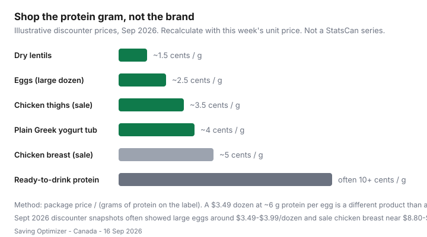

Food & Groceries · Canada
Cheap high-protein meals in Canada: shop the protein, not the trend
Fitness-oriented shoppers walk past $3.49 eggs to buy a branded shake that costs more per gram of protein than the chicken on the flyer. That is not training. That is packaging. Canadian grocery protein is still mostly eggs, dairy, legumes, and whatever bird is on special at a discounter — not a U.S. supplement aisle with maple leaves on it.
This guide is a cost-per-gram framework, a ranked pantry, frozen-fish and Flashfood tactics, plant-forward weeks that still fill you up, and gym templates you can run at No Frills or FreshCo. It is not medical or sports-nutrition advice. If you have a clinical protein target, talk to a dietitian; then shop the label math anyway.
Disclosure: Meal-kit trials are an optional backup for brutal weeks. We mention protein supplements only to compare cost per gram — not to sell a tub. Saving Optimizer may earn a commission if we later add partner links. No partnerships are claimed with grocers or supplement brands. Nothing here is required to click.
Key takeaways
- Divide package price by grams of protein. Rank that list. Ignore the word “gains” on the box.
- Dry lentils, eggs, sale thighs, and large plain yogurt tubs beat most ready-to-drink products.
- September 2026 discounter snapshots often showed large eggs around $3.49–$3.99 a dozen and sale chicken breast near $8.80–$9.90/kg — still check your till.
- Freeze flyer meat and Flashfood packs the same night or you bought compost.
- Shop discount banners for protein. Premium banners sell the story.
Protein cost per gram framework
Write it on your notes app: price ÷ grams of protein in the package. Use the nutrition table, not the front of the box. Compare cooked-yield only if you are honest about waste (chicken bone-in is a different product than a boneless tray).
Statistics Canada’s 2023 household spending (Daily, 21 May 2025; Plus breakdown 24 Jul 2025) still had meat at $1,544 and dairy and eggs at $1,203 on an average store bill. Protein is where flyer discipline shows up. A 10% trim on meat is real money; a 10% trim on branded powder is a rounding error if you should not have bought the powder.

Eggs, dairy, legumes, and sale meats ranked
| Food | Why it usually wins | Watch-outs |
|---|---|---|
| Dry lentils / beans | Cheapest grams; store-brand bags | Need a grain and a fat so the meal is food |
| Eggs | Fast; ~6 g protein per large egg | Avian-flu spikes; still often beat shakes |
| Chicken thighs / drums (sale) | Flyer loss leaders; freeze well | Family packs only if you portion tonight |
| Plain Greek yogurt / cottage cheese | Large tubs; breakfast and sauces | Single-serve cups wreck the unit price |
| Tofu / canned tuna | Predictable; ethnic grocers often cheaper on tofu | Tuna mercury if it is every meal; rotate |
| Chicken breast (sale only) | Convenient for meal prep | Regular $14–$16/kg is a “wait for Thursday” item |
Public September 2026 city snapshots (No Frills Vaughan eggs $3.49/dozen; Edmonton $3.97; sale breast $8.80–$9.90/kg in some weeks) are examples, not your store. Clip the flyer first — sales → meals → list.
Frozen fish and Flashfood meat tactics
Frozen fish at a discounter or Costco is a better default than never-on-sale fresh fillets at a full-service counter. Look at the unit price per 100 g, not the pretty tray.
Flashfood (Loblaw-family chooser) and FoodHero (more Empire-adjacent) will show marked-down meat. Add it only if: pickup is on the route, you can freeze or cook tonight, and the app fee plus extra minutes do not eat the discount. Surprise bakery bags from Too Good To Go are not a protein strategy. Travel-time math is in the surplus comparison.
Same-night SOP: divide, label, freeze flat. Best-before is not a poison date, but slimy chicken is not a PR. When in doubt, skip the listing.
Plant-forward weeks that still feel filling
A cheap high-protein week does not have to be chicken five times. Lentil rice bowls, chickpea pasta with extra cottage cheese, tofu stir-fry on frozen veg, and eggs on toast with beans are Canadian pantry food. Add a fat (oil you bought at Costco, or peanut butter on unit price) so you are not hungry at 9 p.m. and ordering pizza.
Ethnic grocers often beat national banners on 4 L yogurt, 10 lb rice, tofu, and spices. That is a split-cart move, not a new identity. Costco frozen veg plus discounter legumes is a complete protein story for a lot of households.
Gym-goer meal templates on a discounter budget
- Breakfast: 500 g plain yogurt or cottage cheese + frozen berries (Costco bag) + a banana if it was cheap.
- Lunch: Leftover thighs or a tin of tuna + rice + frozen broccoli. Pack it like a job.
- Dinner: Flyer protein + a huge pile of cheap veg (cabbage, carrots, frozen mix) + a carb you already own.
- Anchor snack: Eggs, or Greek yogurt, or a whey scoop if the tub’s cost per gram still beats another yogurt. Recalculate when the tub is on sale, not when the influencer is.
- Flex night: Eggs and toast, or a meal-kit trial if the week exploded — compare per-serving protein and dollars to the thigh template before you subscribe.
You do not need seven unique recipes. You need repeatable grams. Family-scale batching is in family grocery budgeting.
What not to buy for ‘gains’ at premium banners
Walk past: pre-marinated chicken at full-service prices, single-serve protein puddings, cold-pressed “fitness” juices, and the $14 grass-fed story when you needed 40 g of protein. Shop No Frills, FreshCo, Food Basics, Super C, or Maxi for the grams. Use Metro or Sobeys when a specific cut is actually cheaper on the flyer after the extra stop — which is rare.
Whey can be rational if you already drink it and the cost per gram lands near chicken. It is not a moral upgrade. Pay with the card that matches the banner and pay it off — rewards without debt.
Sources & date stamps
- Statistics Canada, Survey of Household Spending 2023 (Daily, 21 May 2025) and Statistics Canada Plus grocery-bill breakdown (24 Jul 2025): meat $1,544; dairy and eggs $1,203.
- Statistics Canada Daily, 14 Sep 2026: food from stores +2.8% year over year in August 2026 — protein prices still move weekly on flyers.
- Public September 2026 discounter snapshots (city basket posts) for egg and chicken-breast examples — verify locally.
- CFIA-style nutrition labels on the pack you are holding: grams of protein are not invented in this article.
Frequently asked questions
What is the cheapest protein in Canadian grocery stores?
Dry lentils and dried beans are usually the cheapest per gram, then eggs when they are not in a shortage spike, then sale chicken thighs and large tubs of plain Greek yogurt or cottage cheese. Recalculate with this week’s unit price.
Are protein bars and ready-to-drink shakes worth it?
As a gym convenience, sometimes. As groceries, they are often 2–4× the cost per gram of eggs or lentils. If you buy them, treat them as a snack budget, not a protein strategy.
How do I compare cost per gram of protein?
Package price divided by grams of protein on the nutrition label (use the whole pack, not one serving if you will eat the pack). Compare that number across eggs, yogurt, chicken, and lentils.
Is chicken breast required for a high-protein week?
No. Thighs, drumsticks, eggs, tofu, and legumes hit the same job on a discounter budget. Breast is a flyer item, not a personality.
Can I use Flashfood for cheap protein?
Yes, if pickup is on your route and you freeze meat the same night. A marked-down pack that becomes waste is not cheap. See the surplus-app guide for travel-time math.